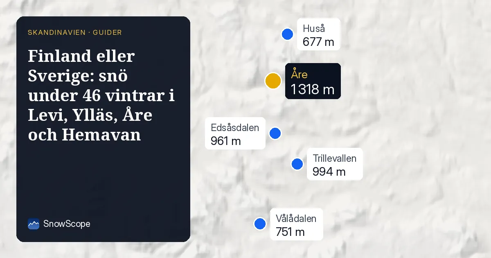
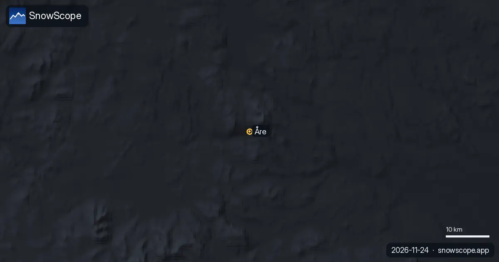

Finland eller Sverige: snö under 46 vintrar i Levi, Ylläs, Åre och Hemavan
Finska Lappland och de svenska fjällen lovar samma sak: en lång, vit och säker vinter. Snöhistorien från 46 vintrar (1980-81 till 2025-26) på åtta skidorter visar att de håller löftet på helt olika sätt. Lappland är lågt men stabilt. Sverige är högre och mycket snörikare i norr, men de södra skidorterna har tappat snö.
Se snöprognosen för Åre live i SnowScope-appenSnödjup, pudervarningar och 3D-kartan, gratis.

Läget den 23 november 2026
I de övre backarna har Sälen 31 cm, Ruka 25 cm, Åre och Hemavan 21 cm vardera, Pyhä-Luosto 17 cm, Idre Fjäll 9 cm, Ylläs 8 cm och Levi 7 cm. Åre har fått 5 cm nysnö de senaste 7 dagarna.
Jämfört med en normal november ligger Sälen (9 cm) och Ruka (15 cm) före. Levi och Ylläs, där 20 cm är normalt i november, ligger efter, och Hemavan ligger långt efter sina normala 68 cm på toppen. En tunn start säger dock lite om vintern: i Lappland kommer de djupa veckorna i februari och mars, och historien visar hur säkert de kommer.
Lappland: låga fjäll, stabil snö
De finska fjällen är små kullar med alpina mått. Levi når 530 m, Ylläs 717 m, Ruka 494 m och Pyhä-Luosto 489 m. Det de saknar i höjd tar de igen i kyla. Vinterns normala topp är 78 cm i Levi, 81 cm i Ylläs, 76 cm i Pyhä-Luosto och 74 cm i Ruka.
Det mest slående är golvet. Även den snöfattigaste av de 46 vintrarna nådde Levi 60 cm och Ylläs 63 cm. De rikaste vintrarna nådde 111 cm och 108 cm. Snön ligger kvar omkring 209 dagar om året i Levi och Ylläs och 204 dagar i Ruka och Pyhä-Luosto, från omkring 19–21 oktober till omkring 20 maj.
Sverige: två länder i ett
Längst i norr är Hemavan i en klass för sig. På toppen (1136 m) är den normala toppen 234 cm, mellan 160 cm den fattigaste vintern och 350 cm den rikaste. Snön kommer omkring 25 september och ligger kvar till omkring 27 juni, 265 dagar ett normalt år. Åre, landets största skidområde, har 115 cm på toppen (1318 m) och snö under 216 dagar.
Längre söderut liknar Sälen och Idre Fjäll mycket mer Lappland i djup: en normal topp på 76 cm i Sälen och 82 cm på toppen av Idre Fjäll. Men säsongen är kortare, 180 dagar i Sälen och 199 på toppen av Idre, och skillnaden mellan en dålig och en rik vinter är större: från 38 cm till 120 cm i Sälen.
Vem tappar snö
Vi jämförde seriens 15 första vintrar med de 15 sista. I Lappland har den normala toppen knappt rört sig: Levi 77 cm och sedan 79 cm, Ylläs 81 cm och 83 cm, Ruka 74 cm och 75 cm, Pyhä-Luosto 80 cm och 78 cm. Även Hemavans topp har hållit, 237 cm och 244 cm.
Södra och lägre Sverige berättar något annat. Sälen gick från 88 cm till 72 cm, toppen av Idre Fjäll från 85 cm till 73 cm och Åres dalbotten från 100 cm till 76 cm, medan toppen sjönk från 121 cm till 113 cm. Säsongen har också blivit kortare: Sälen från 191 till 173 snödagar, toppen av Åre från 230 till 203.
Förra vintern (2025-26) passar mönstret. Sälen nådde 54 cm och Åres dalbotten 57 cm, medan Levi nådde sina normala 78 cm.
Månad för månad: när varje ort är som bäst
December är tunn nästan överallt: normalt snödjup är 39 cm i Levi, 40 cm i Ylläs, 36 cm i Ruka, 49 cm på toppen av Åre och 28 cm i Sälen. Undantaget är Hemavan med 115 cm på toppen. I januari har Levi 55 cm, Ylläs 57 cm, toppen av Åre 76 cm och Sälen 48 cm.
Mars är den djupaste månaden nästan överallt: 66 cm i Levi, 69 cm i Ylläs, 94 cm på toppen av Åre, 62 cm i Sälen och 207 cm på toppen av Hemavan. Hemavan håller sig djupt in i april, med 213 cm.
Det är i säkerheten de åtta skiljer sig mest. Räknar man veckorna med minst 50 cm nio vintrar av tio har toppen av Hemavan 27, Ylläs 11, toppen av Åre 10, Levi 9 och Ruka 5. Sälen har inga: även dess bästa vecka, vecka 8, hade 50 cm bara 80 % av vintrarna.
Så väljer du
Till jul eller början av januari är höjd och breddgrad viktigast: Hemavan eller övre delen av Åre. I Lappland är decembersnön tunnare men kylan håller den, så det passar familjer som åker i preparerade backar. Sälen i december är ett lotteri: var tionde december är normalt djup 9 cm eller mindre.
För en säker februarivecka är Lappland svårslaget: i Levi är bästa veckan vecka 7, med 50 cm 98 % av vintrarna. För vårskidåkning i april, åk norrut och högt, till Hemavan eller toppen av Åre, där normalt aprildjup fortfarande är 93 cm.
Tips för skidåkare
- Boka decemberresor högt eller långt norrut: Hemavan och övre Åre har mest tidig snö.
- I Lappland, planera kring februari och mars, när Levi och Ylläs är som djupast och säkrast.
- I Sälen och Idre Fjäll, håll datumen flexibla före mitten av januari; vintrarna skiljer sig mycket.
- Titta på snökartan veckan innan resan; tidiga snödjup ändras snabbt.
- Utanför pisten i fjällen, läs den officiella lavinprognosen först.
Om siffrorna
Snösiffror: SnowScopes snöhistorik, 46 tidigare vintrar (1980-81 till 2025-26) på tre höjder i skidorten (en uppskattning för ett område, inte ortens egna rapporter). Liftar, backar och resväg: källorna nedan, kontrollerade på angivet datum.
Officiella lavinprognoser: Lavinprognoser (Naturvårdsverket)
Citera den här rapporten
För forskning, undervisning eller press: siffrorna och diagrammen får återanvändas fritt under CC BY 4.0 med den här källhänvisningen.
SnowScope (2026), Finland eller Sverige: snö under 46 vintrar i Levi, Ylläs, Åre och Hemavan, https://snowscope.app/blog/sv/2026/11/finland-vs-sweden-ski-snow-46-winters-levi-yllas-are-hemavan.html, hämtad 2026-11-24
SnowScope (Atlas Labs). (2026, November 24). Finland eller Sverige: snö under 46 vintrar i Levi, Ylläs, Åre och Hemavan. SnowScope snow reports. https://snowscope.app/blog/sv/2026/11/finland-vs-sweden-ski-snow-46-winters-levi-yllas-are-hemavan.html
BibTeX
@misc{snowscope2026finlandvsswedenskisnow46,
author = {{SnowScope (Atlas Labs)}},
title = {Finland eller Sverige: snö under 46 vintrar i Levi, Ylläs, Åre och Hemavan},
year = {2026},
month = nov,
howpublished = {\url{https://snowscope.app/blog/sv/2026/11/finland-vs-sweden-ski-snow-46-winters-levi-yllas-are-hemavan.html}},
note = {Published 2026-11-24 10:02 UTC; accessed 2026-11-24}
}· CC BY 4.0 · Metoder, data och verktyg →
Åre: snö och temperatur efter höjd, i vinter jämfört med förra (verktyg) →
Följ Åre
Gratis: ett meddelande när nysnö är på väg, och prognosen varje morgon.